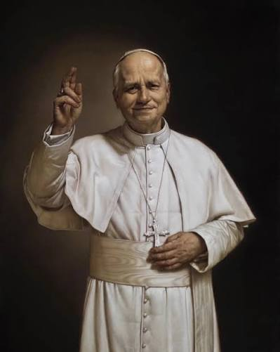
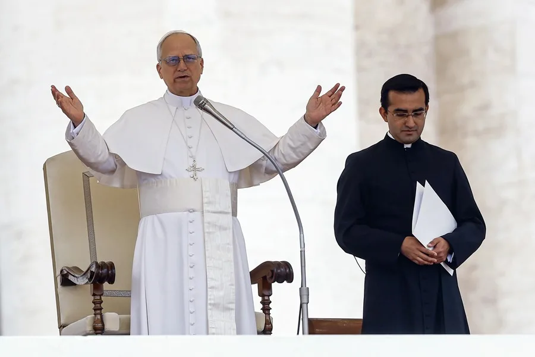
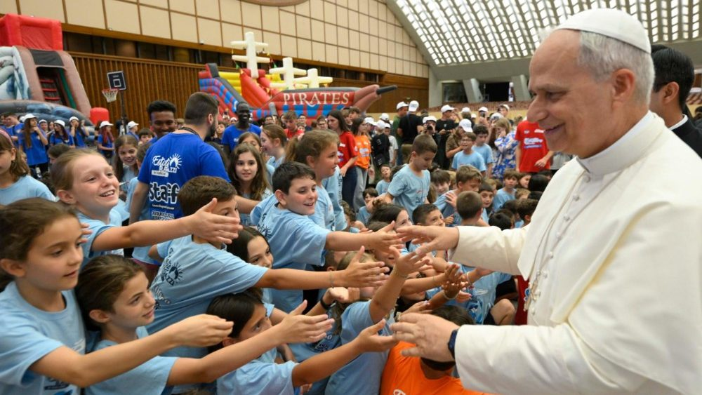

El papa León XIV se llama Robert Francis Prevost. Nació el 14 de septiembre de 1955 en Chicago, Estados Unidos.
También tiene nacionalidad peruana porque vivió y trabajó muchos años en Perú. Fue sacerdote, misionero y obispo.
En mayo de 2025 fue elegido papa de la Iglesia católica.
El papa León XIV llegó a Uruguay el 6 de noviembre de 2026. Su visita incluye actividades en Montevideo, Paysandú y Florida.
| Fecha | Actividad |
| 6 de noviembre | Llegada a Montevideo. |
| 7 de noviembre | Misa en Paysandú y encuentros en Montevideo. |
| 8 de noviembre | Misa en Florida y despedida. |

El papa León XIV ha hablado sobre los problemas que producen las adicciones en las personas y sus familias.
Destaca la importancia de la prevención, la educación y el acompañamiento de las personas que necesitan ayuda.

León XIV también ha reflexionado sobre la depresión y los problemas emocionales que pueden vivir los jóvenes.
Es importante escuchar, acompañar y buscar ayuda profesional cuando sea necesario.
El papa considera que la libertad religiosa es importante para la sociedad.
Todas las personas deben poder expresar sus creencias y respetar a quienes piensan de manera diferente.
León XIV ha destacado la importancia de la ciencia para comprender y cuidar nuestro mundo.
También ha señalado la necesidad de escuchar a las víctimas de abusos y prevenir nuevos casos.
El consentimiento informado es el derecho a recibir información clara antes de aceptar o rechazar un tratamiento médico.
Se relaciona con las decisiones responsables porque permite elegir con información y sin presiones.
| Tema | Relación |
| Adicciones | Prevención y acompañamiento |
| Salud mental | Escuchar y buscar ayuda |
| Libertad religiosa | Respetar las creencias |
| Consentimiento informado | Tomar decisiones con información |
Con este trabajo aprendimos la importancia de cuidar nuestra salud, conocer nuestros derechos y respetar a los demás.
También comprendimos que es importante acompañar a quienes necesitan ayuda y tomar decisiones responsables.
Estas son las páginas que utilizamos:
También utilizamos el documento "Derecho al consentimiento informado".
Catalina Martin
Camila Mendoza
Colegio Liceo Pallotti